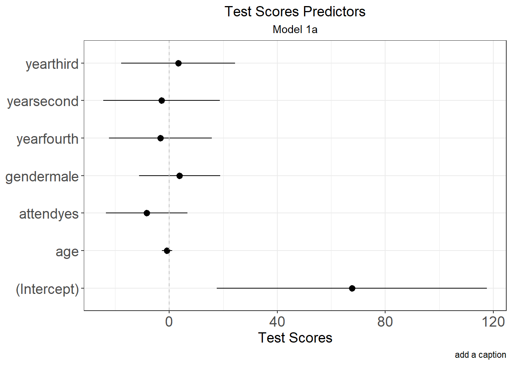
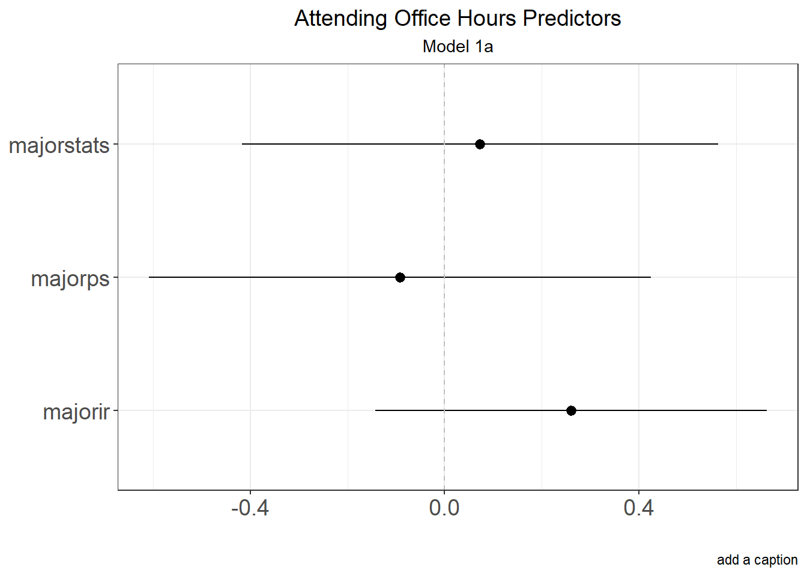

# Turns a Regression into a data frame
library(lmtest)## Loading required package: zoo##
## Attaching package: 'zoo'## The following objects are masked from 'package:base':
##
## as.Date, as.Date.numericlibrary(sandwich)
library(ggplot2)
#Turns a Regression into a data frame
Model.DF <- function(Model, Robust.SE = NULL) {
#Extract Coefficients
Model.Output <- as.data.frame(coef(summary(Model)))
Model.Output$Label <- rownames(Model.Output)
rownames(Model.Output) <- NULL
#Generate Confidence Intervals
CI <- as.data.frame(confint(Model, variable.names(Model), level=0.95))
CI$Label <- rownames(CI)
rownames(CI) <- NULL
#Merge Model and CIs together
Model.Output.Final <- merge(x = Model.Output, y = CI, by =c("Label"))
#Name the columns numeric
colnames(Model.Output.Final) <- c("Label", "Coeff", "SE", "t.value", "P.Value", "lower", "upper")
Model.Output.Final$Sig.05 <- ifelse(Model.Output.Final$P.Value <= .05, 1,0)
Model.Output.Final$Sig.10 <- ifelse(Model.Output.Final$P.Value <= .10, 1,0)
#Adjusted R Squared
Model.Output.Final$AdJ.R2 <- summary(Model)$adj.r.squared
#Dependent Variable
Model.Output.Final$DV <- all.vars(formula(Model))[1]
#Check for NA's in Model
for(n in names(coef(Model))){
if(is.na(Model$coefficients[[n]]) == T){
newRow <- data.frame(Label=n,
Coeff = NA,
SE = NA,
t.value = NA,
P.Value = NA,
lower = NA,
upper = NA,
AdJ.R2 = NA,
Sig.05 = NA,
Sig.10 = NA,
DV=all.vars(formula(Model))[1])
Model.Output.Final <- rbind(Model.Output.Final, newRow)
}
}
#Option for Robust Standard Errors
if(is.null(Robust.SE) == F){
library(sandwich)
x<- coeftest(Model, vcov = sandwich::vcovHC(Model, type=Robust.SE))
xr<- setNames(data.frame(x[1:dim(x)[1], 2]), c("Robust Standard Errors"))
xr$Label<- rownames(xr); rownames(xr) <- NULL
Model.Output.Final <- merge(Model.Output.Final, xr, by = "Label")
}
return(Model.Output.Final)
}# Create a fake data set
library(randomNames)## Warning: package 'randomNames' was built under R version 4.0.5## Error in get(genname, envir = envir) : object 'testthat_print' not foundset.seed(1992)
age <- sample(18:30, 50, replace=TRUE)
score <- sample(1:100, 50, replace=TRUE)
year <- sample(c("first", "second", "third", "fourth"), 50, replace=TRUE)
major <- sample(c("ps", "cs", "ir", "stats"), 50, replace =TRUE)
attend <- sample(c("yes", "no"), 50, replace=TRUE)
office <- sample(c("always", "sometimes", "never", "not applicable", "don't know"), 50, replace=TRUE)
gender <- sample(c("male", "female"), 50, replace=TRUE)
student <- randomNames(50)
class <- data.frame(age, score, year, major, attend, office, gender, student)
# Example
Result <- lm(score ~ age + year + attend + gender, data=class); summary(Result)##
## Call:
## lm(formula = score ~ age + year + attend + gender, data = class)
##
## Residuals:
## Min 1Q Median 3Q Max
## -48.298 -17.421 -0.337 17.597 56.207
##
## Coefficients:
## Estimate Std. Error t value Pr(>|t|)
## (Intercept) 67.6690 24.7704 2.732 0.0091 **
## age -0.7615 0.9557 -0.797 0.4299
## yearfourth -3.2172 9.4413 -0.341 0.7349
## yearsecond -2.8109 10.6896 -0.263 0.7938
## yearthird 3.3660 10.4669 0.322 0.7493
## attendyes -8.3145 7.4686 -1.113 0.2718
## gendermale 3.9053 7.4178 0.526 0.6013
## ---
## Signif. codes: 0 '***' 0.001 '**' 0.01 '*' 0.05 '.' 0.1 ' ' 1
##
## Residual standard error: 25.31 on 43 degrees of freedom
## Multiple R-squared: 0.06542, Adjusted R-squared: -0.06499
## F-statistic: 0.5016 on 6 and 43 DF, p-value: 0.8036Result.df <-Model.DF(Result)
# ggplot
ggplot(Result.df, aes(x = Label, y = Coeff, ymin = lower, ymax = upper)) +
geom_pointrange() +
coord_flip ()+
geom_hline(yintercept = 0, linetype = "dashed", color = "grey") +
guides(color=FALSE) +
theme_bw() +
labs(title = "Test Scores Predictors",
subtitle = "Model 1a",
y = "Test Scores",
caption = "add a caption") +
theme(plot.title = element_text(hjust = 0.5, size = 14),
plot.subtitle = element_text(hjust = 0.5),
axis.title.y=element_blank(),
axis.title = element_text(size = 14),
axis.title.x = element_text(size = 14),
axis.text.y = element_text(size = 14),
axis.text.x = element_text(size = 14))
library(lmtest)
Model.DF(Result, Robust.SE = "HC3")## Label Coeff SE t.value P.Value lower upper
## 1 (Intercept) 67.6689917 24.770443 2.7318443 0.00909933 17.714633 117.623350
## 2 age -0.7615199 0.955706 -0.7968139 0.42993687 -2.688885 1.165845
## 3 attendyes -8.3144711 7.468565 -1.1132622 0.27178056 -23.376268 6.747326
## 4 gendermale 3.9052879 7.417794 0.5264757 0.60126308 -11.054119 18.864695
## 5 yearfourth -3.2171750 9.441348 -0.3407538 0.73494827 -22.257469 15.823118
## 6 yearsecond -2.8109023 10.689635 -0.2629559 0.79384047 -24.368605 18.746801
## 7 yearthird 3.3660103 10.466899 0.3215862 0.74932428 -17.742504 24.474525
## Sig.05 Sig.10 AdJ.R2 DV Robust Standard Errors
## 1 1 1 -0.06498932 score 21.6077770
## 2 0 0 -0.06498932 score 0.8578995
## 3 0 0 -0.06498932 score 7.6964403
## 4 0 0 -0.06498932 score 8.2511786
## 5 0 0 -0.06498932 score 9.9457700
## 6 0 0 -0.06498932 score 10.4186155
## 7 0 0 -0.06498932 score 10.6621436# Run a glm model
class$office <- ifelse(class$office %in% c("not applicable", "don't know"), NA, class$office)
Results2 <- glm(factor(office) ~ age + score + major, data=class, family=binomial(link="logit"))
# Calculate the margins
library(margins)
Results2.m<- summary(margins(Results2, variables = c("major"), type="response", change="sd"))
Results2.m## factor AME SE z p lower upper
## majorir 0.2605 0.2058 1.2662 0.2054 -0.1428 0.6638
## majorps -0.0924 0.2636 -0.3503 0.7261 -0.6091 0.4244
## majorstats 0.0729 0.2499 0.2917 0.7705 -0.4170 0.5628# Use multiwaycov to cluster
# vcov=cluster.vcov(Results2, cluster=class$level)))
# Plot it with ggplot
ggplot(Results2.m, aes(x = factor, y = AME, ymin = lower, ymax = upper)) +
geom_pointrange() +
coord_flip ()+
geom_hline(yintercept = 0, linetype = "dashed", color = "grey") +
guides(color=FALSE) +
theme_bw() +
labs(title = "Attending Office Hours Predictors",
subtitle = "Model 1a",
y = "",
caption = "add a caption") +
theme(plot.title = element_text(hjust = 0.5, size = 14),
plot.subtitle = element_text(hjust = 0.5),
axis.title.y=element_blank(),
axis.title = element_text(size = 14),
axis.title.x = element_text(size = 14),
axis.text.y = element_text(size = 14),
axis.text.x = element_text(size = 14))